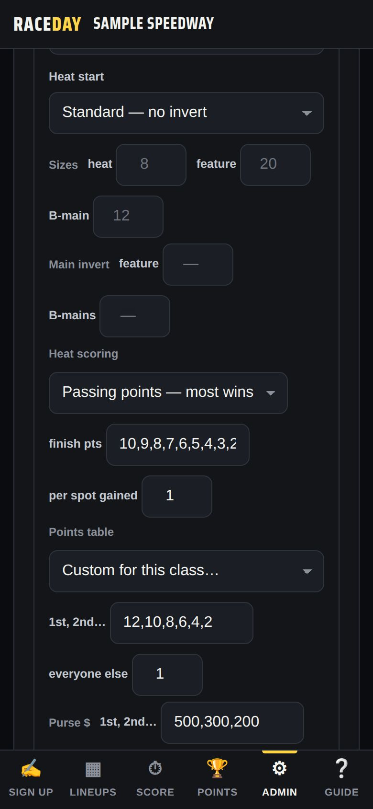
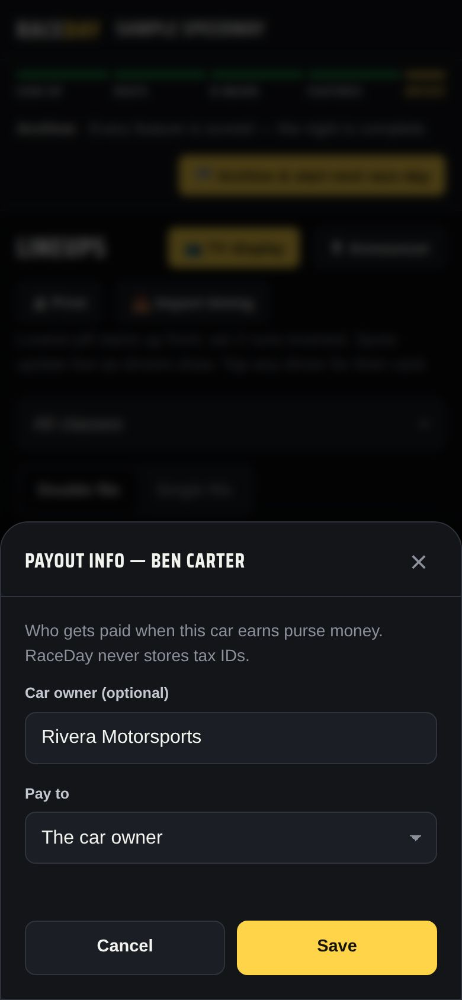
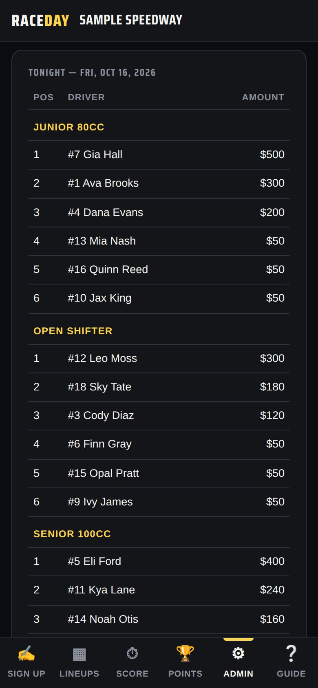
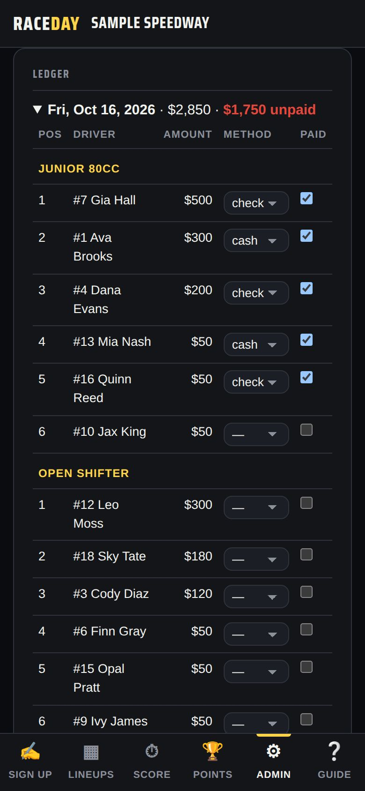
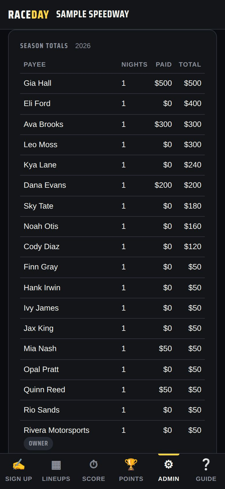

-
Set a purse for each class
In Admin → Race classes, find Purse $ on the class. Type the amounts for 1st, 2nd… separated by commas (write 1000, not 1,000), and any start money.

Purse, points table and heat scoring -
Who gets paid
Each paid position gets its amount. Finishers past the list and cars that DNF get the start money — they started. DNS and DQ are not paid.
-
Pay the car owner instead
Tap a driver's name, then Payout info. Add the Car owner (optional) and set Pay to → The car owner. Their winnings are listed under the owner from then on.

Payout info -
Check tonight's payouts
Admin → Race night → Payouts shows Tonight — every paid car by class with the total, updating as feature finishes go in. Print a copy from Lineups → 🖨 Print → Payout sheet (it has a signature column).

Tonight -
Archive, then mark them paid
When you archive the night, its payouts are saved with it. In the Ledger, pick cash, check or other for each one and tick Paid as you hand it out — unpaid amounts show in red.

Ledger -
Season totals for 1099s
Season totals adds up every payee for the year. Season totals → CSV downloads it for your accountant; Every payout → CSV lists each one.

Season totals
Good to know
- RaceDay never stores Social Security or tax ID numbers — collect W-9s separately.
- Payouts stay on the admin device (they never sync to other devices) and are included in your backups.
- Deleting a night from Race day history deletes its payouts too — RaceDay warns you first.
Next guides
Still stuck? The Field Manual walks through every screen, and the FAQ covers common questions. Or just text me — it's the fastest way to get an answer.
💬 Text Josh · (260) 207-4983 →or email